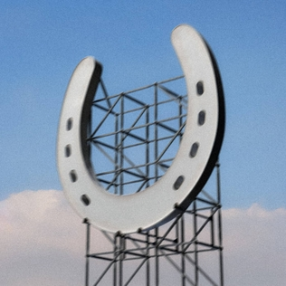
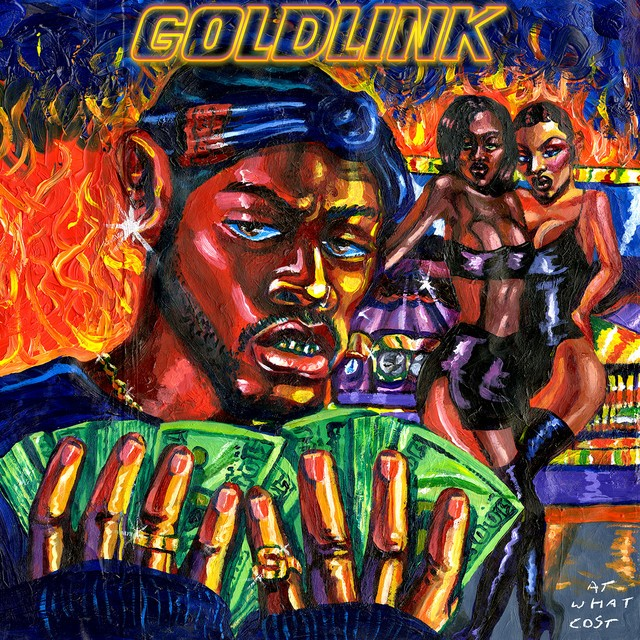
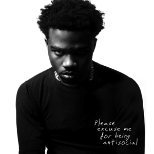
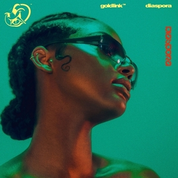

Channel Orange by Frank Ocean
Released: 2012
Genre: R&B
Meaning: My favorite album of all times, I first discovered the album when I discovered the song "Super Rich Kids". The album explores the themes of love, religion, and societal issues. The entire album is a nostalgic ride, from the song "Sierra Leone" being about Frank's teenage years to "Thinking About you" being about the summer where Frank first fell in love. This album conveys a feeling of nostalgia and painful emotions and redefined what modern R&B is.
Genre: R&B
Meaning: My favorite album of all times, I first discovered the album when I discovered the song "Super Rich Kids". The album explores the themes of love, religion, and societal issues. The entire album is a nostalgic ride, from the song "Sierra Leone" being about Frank's teenage years to "Thinking About you" being about the summer where Frank first fell in love. This album conveys a feeling of nostalgia and painful emotions and redefined what modern R&B is.

Igor by Tyler the Creator
Released: 2019
Genre: Pop and R&B
Meaning: Tyler's Magnum Opus, this album separated Tyler the Creator from the rest of the R&B artists with his unique style. The album, praised for its production and sound design, is structured as a journey/story throughout the stages of a relationship. This is prevalent when looking at "Igors Theme", "EARFQUAKE", and "I Think" telling a story about Tyler falling in love with someone, and towards the end of the album Tyler tells through his song of how he fell out of love with songs such as "GONE, GONE/THANK YOU" and "ARE WE STILL FRIENDS". This album for me was an emotional rollercoaster, with lyrical storytelling and high production value, it shows the emotional impact songs can have.
Genre: Pop and R&B
Meaning: Tyler's Magnum Opus, this album separated Tyler the Creator from the rest of the R&B artists with his unique style. The album, praised for its production and sound design, is structured as a journey/story throughout the stages of a relationship. This is prevalent when looking at "Igors Theme", "EARFQUAKE", and "I Think" telling a story about Tyler falling in love with someone, and towards the end of the album Tyler tells through his song of how he fell out of love with songs such as "GONE, GONE/THANK YOU" and "ARE WE STILL FRIENDS". This album for me was an emotional rollercoaster, with lyrical storytelling and high production value, it shows the emotional impact songs can have.

Wallsocket by Underscores
Released: 2021
Genre: Alternative/Indie/Hyperpop
Meaning: My friend showed me this album which opened me up to the world of indie music. Also the first concert that I attended was in NYC. The album tells about the story of an imaginary town in Michigan called WallSocket, where it tells about the experience of being trans in a small town and the experience they face. This is evident in the song "Johnny Johnny Johnny" which explores the exploitation vulnerable members of our society face. Overall this album is very out there for me but conveys emotional meaning and tackles sensitive social problems.
Genre: Alternative/Indie/Hyperpop
Meaning: My friend showed me this album which opened me up to the world of indie music. Also the first concert that I attended was in NYC. The album tells about the story of an imaginary town in Michigan called WallSocket, where it tells about the experience of being trans in a small town and the experience they face. This is evident in the song "Johnny Johnny Johnny" which explores the exploitation vulnerable members of our society face. Overall this album is very out there for me but conveys emotional meaning and tackles sensitive social problems.

At What Cost by GoldLink
Released: 2017
Genre: Hip-Hop
Meaning: I discovered this album during COVID and the beats of the song immediately captivated me. The song focused on the idea of cultural disappearance, and topics such as joy and grief. It explores the experience of growing up in Washington DC and the artist's memory of how the black culture in DC is slowly being erased. The album name "At What Cost" poses a question to the listener at the cost of erasing an entire culture from a city and how it can impact the people living in it. This album's combination of rap and pop and the collaboration with big artists such as Steve Lacy, making it especially catchy and a top favorite of mine.
Genre: Hip-Hop
Meaning: I discovered this album during COVID and the beats of the song immediately captivated me. The song focused on the idea of cultural disappearance, and topics such as joy and grief. It explores the experience of growing up in Washington DC and the artist's memory of how the black culture in DC is slowly being erased. The album name "At What Cost" poses a question to the listener at the cost of erasing an entire culture from a city and how it can impact the people living in it. This album's combination of rap and pop and the collaboration with big artists such as Steve Lacy, making it especially catchy and a top favorite of mine.

Nothing was the Same by Drake
Released: 2013
Genre: Hip-Hop
Meaning: I first listened to this album during senior year of highschool where I would listen to it when driving to and from school, which brings back a lot of nostalgic memories. This album is obviously dedicated to the changes to the artist's life after their fame, which is evident in the title "Nothing Was the Same'. The song showcases a draw-my-life type theme where the artist talks about the experiences he had since becoming famous. However, the theme of the albums and the lyrics show that the artist was the only one who didn't change, but everything around him. Overall, the album tackles what it means to change and how it's important to know yourself even if everything around you is changing.
Genre: Hip-Hop
Meaning: I first listened to this album during senior year of highschool where I would listen to it when driving to and from school, which brings back a lot of nostalgic memories. This album is obviously dedicated to the changes to the artist's life after their fame, which is evident in the title "Nothing Was the Same'. The song showcases a draw-my-life type theme where the artist talks about the experiences he had since becoming famous. However, the theme of the albums and the lyrics show that the artist was the only one who didn't change, but everything around him. Overall, the album tackles what it means to change and how it's important to know yourself even if everything around you is changing.

Please Excuse Me For Being Antisocial by Roddy Rich
Released: 2019
Genre: Hip-Hop
Meaning: I came across this album after hearing "The Box" which was a huge success in terms of streams. The song's meaning is evident in its title, with themes of closed-offness being prevalent in the lyrical themes of the album. The entire album is basically an apology for the artist being antisocial due to his tough upbringing and life experiences. This causes other people to view him as an antisocial person but in reality he's not but rather it's a perception from his tough upbringing. The album has fantastic beat and organization, with hits such as "High Fashion" and "War Baby" standing out for me.
Genre: Hip-Hop
Meaning: I came across this album after hearing "The Box" which was a huge success in terms of streams. The song's meaning is evident in its title, with themes of closed-offness being prevalent in the lyrical themes of the album. The entire album is basically an apology for the artist being antisocial due to his tough upbringing and life experiences. This causes other people to view him as an antisocial person but in reality he's not but rather it's a perception from his tough upbringing. The album has fantastic beat and organization, with hits such as "High Fashion" and "War Baby" standing out for me.

DIASPORA by GoldLink
Released: 2019
Genre: Japanese Hip Hop/Rap
Meaning: If you can't tell, I'm a huge GoldLink fan, as his albums often dive into the themes of culture and what it means to preserve and blend culture. Diaspora continues these trends, as the style of this album is a blend of many African, Caribbean, and USA music. The song title could be translated to the dispersal of African music from its origin. The album features a lot of different styles from the war cries in "ZULU SCREAM" to "Joke Ting" which is slang in the Caribbean. This album is GoldLink at his best with all the best quality of "At What Cost" and a bit extra to show his growth as an artist and his central message of preserving African American culture and music.
Genre: Japanese Hip Hop/Rap
Meaning: If you can't tell, I'm a huge GoldLink fan, as his albums often dive into the themes of culture and what it means to preserve and blend culture. Diaspora continues these trends, as the style of this album is a blend of many African, Caribbean, and USA music. The song title could be translated to the dispersal of African music from its origin. The album features a lot of different styles from the war cries in "ZULU SCREAM" to "Joke Ting" which is slang in the Caribbean. This album is GoldLink at his best with all the best quality of "At What Cost" and a bit extra to show his growth as an artist and his central message of preserving African American culture and music.

AM by Arctic Monkey
Released: 2013
Genre: Rock
Meaning: I discovered this album recently even though it's been out for more than a decade. The album features rock and pop beats that complement well with its theme of loneliness and regret. This is evident in the song "505" where the lyrics show the regret about returning to a hotel room of a loved one. Overall this album shows raw honesty, and captures the feeling of regret and loneliness well.
Genre: Rock
Meaning: I discovered this album recently even though it's been out for more than a decade. The album features rock and pop beats that complement well with its theme of loneliness and regret. This is evident in the song "505" where the lyrics show the regret about returning to a hotel room of a loved one. Overall this album shows raw honesty, and captures the feeling of regret and loneliness well.

Blonde by Frank Ocean
Released: 2016
Genre: R&B/Soul
Meaning: This album has captured the hearts of many, and is regarded as Frank's best works. The album is about heartbreak and sexuality. The album has two titles "Blonde" the feminine spelling and "Blond" the masculine spelling. The entire album is about Frank's own sexuality for both genders, and shows the emotions he felt trying to navigate the line in between. Overall this album is one of his best works and is a great successor to Channel Orange.
Genre: R&B/Soul
Meaning: This album has captured the hearts of many, and is regarded as Frank's best works. The album is about heartbreak and sexuality. The album has two titles "Blonde" the feminine spelling and "Blond" the masculine spelling. The entire album is about Frank's own sexuality for both genders, and shows the emotions he felt trying to navigate the line in between. Overall this album is one of his best works and is a great successor to Channel Orange.